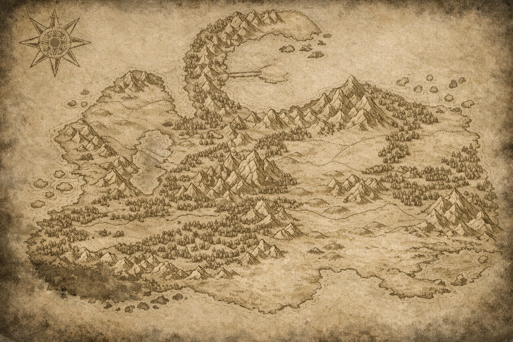

Sinopse
“Quando o espírito é esmagado... o rugido é a única resposta.”
Em Sublicus, terra dilacerada por feras mágicas, guerras esquecidas e a tirania dos dragões, sobreviver é uma arte. As nações Aeon e Kaleidos estão prestes a colidir. Apenas quatro clãs mantêm o frágil equilíbrio... por enquanto.
Azuos correu pelas sombras, sem memória clara... apenas dor. O que o perseguia, talvez fosse mais antigo que os próprios deuses.
Ele foi encontrado desacordado na floresta, marcado por algo que não devia existir — uma marca negra que arde como um lembrete de que ele não é mais apenas humano.
Agora, treinado por assassinos, vigiado por sombras e manipulado como arma, Azuos é moldado por um mundo que despreza fraquezas.
Mas há ecos... memórias soterradas, cicatrizes que falam. E quando tudo que resta é silêncio …ele ruge.
Personagens Principais

Azuos
O portador da Marca Negra. Jovem vitalista atormentado por um segredo terrível. Carrega cicatrizes físicas e emocionais. Busca respostas sobre seu passado e sobre a entidade que habita sua alma.

???
Nada se sabe sobre sua origem. Sua presença causa inquietação entre magos e vitalistas. Tudo o que se tem são rumores... e cicatrizes deixadas para trás.

Cerverus
O último dragão. Membro da realeza draconiana e um dos maiores guerreiros vivos. Mestre de Azuos, tornou-se uma figura paterna em sua jornada.

Sado
O irmão de armas. Vitalista do furto e parceiro fiel. Feroz em combate, leal no silêncio. Um espírito que encontrou em Azuos um propósito maior que a guerra.

Sakura
A flor letal. Mestra prodígio do Clã da Lua, perita em técnicas de assassinato e furtividade. Move-se com precisão cirúrgica — beleza e morte num só gesto.

Slyther
A sombra que desafia. Rival impulsivo de Azuos. Ágil, venenoso e arrogante. Seu orgulho o coloca sempre em rota de colisão com aqueles que brilham mais que ele.

Runan
Guardião do Clã das Runas. Vitalista prodígio com poderes misteriosos. Seus feitos desafiam a lógica e sua presença intimida até os mais experientes.

Yumi
A lâmina do silêncio. Instrutora no Clã da Lua e guarda-costas de elite. Discreta, precisa e letal. Protege o que acredita com disciplina inabalável.

Kagemitsu
O general da lua. Líder respeitado do Clã da Lua. Mentor de jovens guerreiros e símbolo de estratégia, equilíbrio e força entre os vitalistas.

Koda
O sol que sangra. Vitalista misterioso com poderes do sangue e da luz. Ator dos bastidores, guardião silencioso dos escolhidos e executor do destino.
Universo & Ambientação
“Caelum não é um mundo. É um campo de guerra entre monstros, memórias e ambições.”
Em ACDA, o mundo não é cenário — é um personagem. Caelum foi forjado por guerras, criaturas colossais e segredos enterrados. Aqui, magia não é fantasia: é maldição ou redenção.
Este é o solo onde Azuos desperta, marcado, caçado e escolhido para algo que ainda não entende. Bem-vindo a Caelum. Onde cada nome carrega uma maldição.
{kind=link}

Linha do Tempo
“Alguns eventos não mudam apenas o mundo — mudam quem você se torna nele.”
Ato I — Equilíbrio Rompido
Início
Ato II — As Luzes se Apagam
Escalada
Ato III — A Legião Negra
Ruptura
Ato IV — (em breve)
Em produção
Ato V — (em breve)
Roadmap
ACDA — As Cinzas do Amanhã
Em Caelum, os dragões não são lenda: eles
encerraram eras.
O que sobrou se divide entre Aeon (dogma e controle) e
Kaleidos (utopia fraturada).
Os quatro clãs seguram a última muralha enquanto a
energia negativa transforma medo em demônios e florestas em consciências famintas.
ACDA é sobre o custo real de continuar vivo quando o mundo já desistiu de você.
Um mundo em colapso
Civilizações ruíram sob dragões e fome de energia. Aeon ergue disciplina como fé; Kaleidos vende esperança que não paga a conta. Entre elas, os clãs que outrora aguentavam o impacto — estão dilacerados em disputas internas, traições e jogos de poder. Dragões descem dos céus como presságio inevitável, enquanto a energia negativa dá origem a demônios e criaturas que se alimentam das próprias emoções humanas. A cada noite, a energia negativa cresce e reescreve o mapa.
O coração do conflito
Entre a utopia quebrada de Kaleidos e o autoritarismo religioso de Aeon
pulsa a verdadeira ameaça: o colapso das verdades universais.
O desequilíbrio não nasce apenas dos monstros lá fora,
mas dos que cada um carrega por dentro.
ACDA não narra heróis invencíveis, mas sobreviventes que rugem mesmo
quando a esperança já abandonou o campo.
O conflito real não é apenas político ou militar — é espiritual,
moral e existencial.
É a luta por significado quando o mundo já não oferece nenhum.
O que torna ACDA único
- Vitalismo como ciência espiritual: emoção tem massa, intenção tem custo, cura tem preço.
- Energia negativa que corrompe até o que é puro.
- Os clãs refletem culturas profundas e cheias de falhas.
- Não há bem absoluto nem mal absoluto — apenas sobreviventes tentando segurar o que resta.
- Essa é a marca de ACDA: brutal, íntima, sem escapatória fácil.
Estética & inspiração
Metais escuros, brasas douradas, símbolos de rito — elegância suja.
O visual serve a narrativa: peso antes de brilho.
A estética de ACDA nasce da dor e da beleza no caos.
Inspirada em Berserk,
Fairytail,
Bleach e jogos soulslike,
a obra mescla brutalidade com lirismo.
Não há filtros: batalhas são violentas, a espiritualidade é velada,
e a narrativa mergulha em dilemas existenciais.
O resultado é uma experiência intensa, onde cada quadro, cada palavra,
carrega o peso de um mundo que não se curva.
É fantasia sombria, mas com a alma humana exposta no centro.

Raul Takagi Sato Souza
Programador • Webdesigner • Artista Digital • Escritor/Roteirista
Por trás do rugido
ACDA — As Cinzas do Amanhã é a obra-pilar do universo NoHeroes. Mais que um título, é o início de um ecossistema digital 100% brasileiro que integra livros, mangás, animes e jogos — um caminho para ultrapassar o modelo tradicional e construir algo maior.
Não foi feito por grandes estúdios. Foi feito na raça: com um celular antigo de tela quebrada, um notebook que travava no navegador e desligava a cada oscilação de bateria — e com criatividade + fé em Deus para continuar quando tudo parecia contra. Sem atalhos, sem patrocínio: só trabalho, visão e persistência.
Visão: criar o primeiro ecossistema integrado de fantasia dark brasileiro — onde cada mídia conversa com a sua vida real.